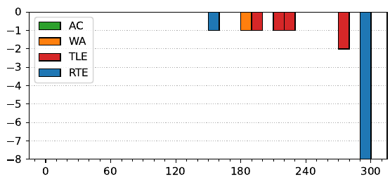

46th ICPC World Finals
Problem authors:
Federico Glaudo and Per Austrin
Solved by 0 teams.
Shortest judge solution: 2537 bytes.

This was, in the judges’ opinion, the hardest problem in this set.
Each pyramid position corresponds to a vector in Z3, with the ankh corresponding to 0, the eye to 1, and the ibis to 2. Similarly, each lever corresponds to a vector in Z3k, with not moving a pyramid corresponding to 0, moving it clockwise corresponding to 1, and counterclockwise — to 2. Moving a lever corresponding to a vector u corresponds to adding the vector representing the lever to the vector representing the pyramids.
So, in the backstory, we had n ≤ 40 lever vectors in Z3k. We took all possible 2n sums of some of those vectors, and in each case got some vector describing the positions of all the n pyramids; call those vectors (si)i=12ⁿ. We are asked to find some possible sequence of vectors (uj)j=1n that would generate the observed si. This is a hard problem, and we will solve it in parts.
Part 1: k = 1 First, let us make an observation about the problem in dimension 1. In this case, (uj) is just a multiset of numbers in Z3, and similarly (si) — so (si) is just a zeroes, b ones, and c twos. Let’s see what are the effects on the multiset (si) of appending a single number to (uj). If we append a zero, then a, b, and c get multiplied by two. If we append a 1, then a, b, c := a + c, b + a, c + b (and the results of appending a 2 are similar). If we first append all the 1s and 2s, we can see that the multiplicities (a, b, c) are always either {x, x + 1, x + 1} or {x, x, x + 1}, in some order. The important part is that at least one of the numbers a, b, c is always odd if we only add levers corresponding to one and two. So, the number of levers corresponding to zero is the largest power of two dividing all of a, b, c.
Part 2: Summing over a linear subspace Now, let’s try to use the reasoning for k = 1 in the more general case. Consider any vector x ∈ Z3k, and take the scalar product of everything with that vector. More precisely, consider the set of numbers (uj · x)j=1n; then the multiset of all possible sums of those numbers is (si · x)i=12ⁿ, because scalar products commute with addition. So, from Part 1, we can find out how many ujs satisfy uj · x = 0, for any x. Let us denote f(x) = |{j : uj · x = 0}|. There are only 3k possible x’s, and up to 3k possible values of si, so we can calculate f(x) for all possible x in O(k 32k), which is easily fast enough.
This means that for any linear subspace of dimension k − 1, we can find out how many of the ujs are in that subspace. We can use this in a number of ways to narrow it down.
For example, consider an arbitrary-dimension subspace H, and G = H⊥, and look at the ∑x∈H f(x). This is
∑x∈H f(x) = ∑j=1n ∑x∈H [x ⊥ uj] = ∑x∈H ∑j=1n [x ⊥ uj] = ∑j=1n |H ∩ uj⊥|,
which is the size of the intersection of H and uj⊥, summed over j. How much does a single uj contribute to that sum? If uj ∈ G, then uj is orthogonal to every vector in H, and so it contributes |H|. Otherwise, the intersection of H and uj⊥ will be a subspace of dimension one smaller, and so uj will contribute |H|/3. So, just by counting, for any G we can calculate how many ujs are in G — it is
( (1/2) (3/|G⊥|) ∑x∈G⊥ f(x) − n )
Having previously calculated f(x) for any x, we can calculate the value above in O(|G⊥|) for any G.
Part 3: Flipping signs First, take G = {0} — the zero-dimensional subspace. We find out how many all-zero levers are in the set {uj}. Then, take G = {0, x, −x} for any x. We find how many of the ujs are in G — and, since we already know how many ujs are zero, how many are in the set {x, −x} for any x ∈ Z3k. Calculating this for all (3k − 1)/2 values of x takes O(32k). So, we know all the uj up to the selection of signs; we now need one last idea.
We potentially have up to 2n possibilities to assign the signs to check (possibly less, if we had any zero vectors, or if any group of {x, −x} is larger than one element). We need to find one that works. Notice that if we calculate the sums si for some u1, . . ., un, then the sums si′ for u1, . . ., un−1, −un are going to be the multiset {si − un} (the bijection is that we map any set of indices containing n to the same set without n, and vice versa). So, we do the following:
You can also see this paper or this paper for a detailed examination of a more generic problem.